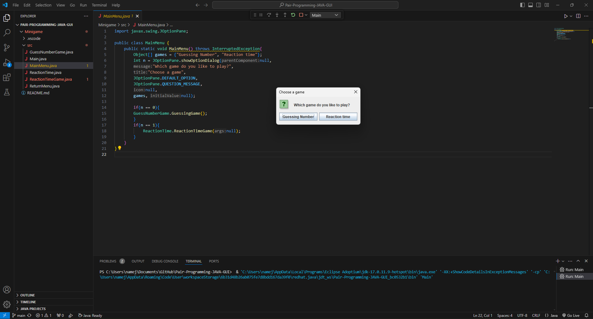

About Me
.jpg)
Hello, my name is Kalen Currie. I am currently in grade 12 and planning to go to college to study Electromechanical Engineering Technology - Mechatronics. My future goals in the technology field include pursuing a career in engineering for a fun and interesting job.
My experience in the tech field is quite diverse. At the moment, I am in the robotics club. Last year, in the 2023 robotics season, I was part of the programming team. Although my code was not used in the final robot, I learned a lot from the experience.
I also created my own game on the ROBLOX platform using Lua. It was a fun project, though I eventually got burned out. Another project I worked on was creating a radar system with a group in Grade 11. This radar used an ultrasonic sensor to detect objects and alert teachers if someone tried to leave the classroom without permission.
Languages
JavaScript, HTML, CSS, Lua, Python
My Work
GUI App
The GUI app features two different games: a random guessing game and a reaction time game. I created the main menu, the random guessing game, and the return menu, while my partner Aiden created the reaction time game.
Wins: Successfully adding the main menu and random guessing game. Able to have a working GUI interface with a main menu and a return menu that asks user to return to menu or exit.
Challenges: Trying to carry a variable from one class to the other was challenging because of the lack of knowladge
Teammates: Aiden (developed the reaction time game).
Creation Process: The app was built using Java Swing. I focused on creating the main menu, return menu and the random guessing game. My partner Aiden developed the reaction time game. We collaborated to create both games into the app and tested it ensure it works.
Future Plans: I plan to enhance the app by adding more mini-games and improving the existing ones.
Interactive App

The Interactive App is a modded version of minesweeper named MineModder. The game can be modifited to have differnt features, for example you can set the number of ombs, size of board, etc.
Wins: Successfully creating a working minesweeper game. Able to have a working mainmenu that changes the game of the minesweeper, for example the modifires work and change the game.
Challenges: Creating the modifiers was not an easy task as adding the notification at the bottom of the board leting the user know a modifier was added was a challange and I needed to research to get to work.
Creation Process: I first followed a youtube code along that showed me how to create the minesweeper game (Credit to Kenny Yip Coding). I then built off his game to create a mian menu and a modifiers for the game. I also added some accesibility options like dark mode and zen mode.
Future Plans: The furture plans of the app is creating different type of theming for the app as it is just the default grey and white background unless dark mode is turned on.